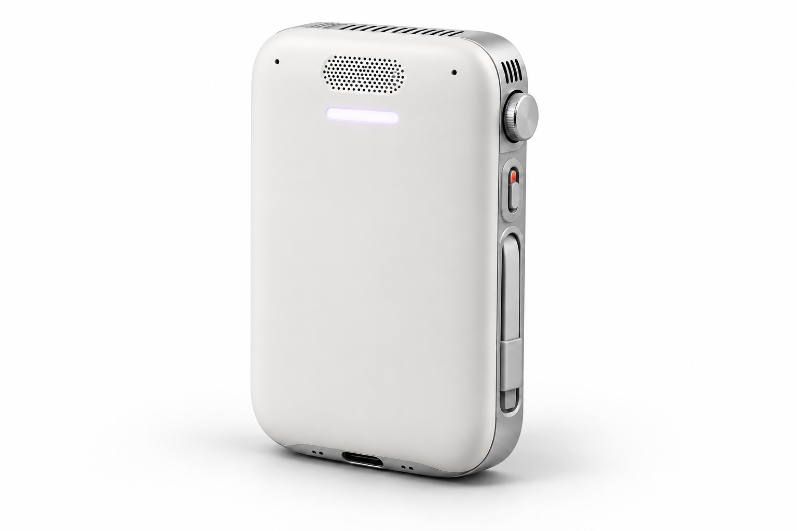
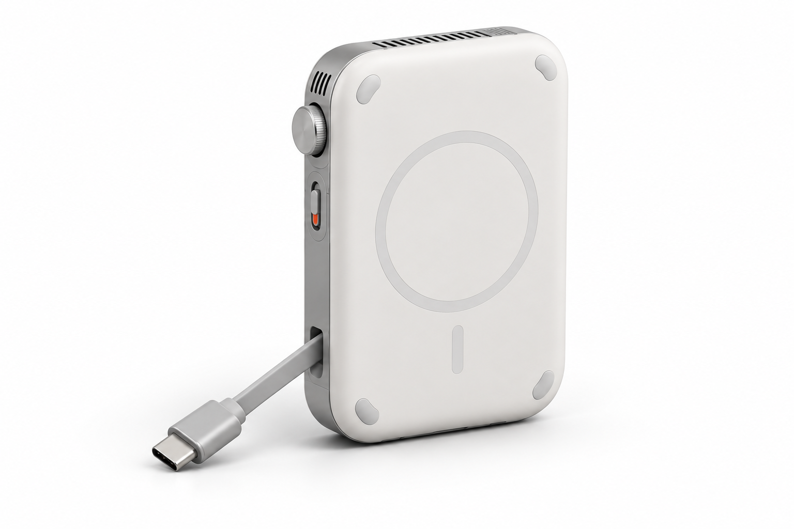

Choose the context.
Ask MOB to use the approved project files and check current public sources. Its model, speech and tools are planned to run inside its own Linux computer.
PERSONAL AI COMPUTER · IN DEVELOPMENT
A voice-operated AI computer.
Designed to turn a client request
into work ready for review.

Industrial design concept. No integrated hardware prototype has been validated.
FROM CLIENT REQUEST TO REVIEWABLE DRAFT
Ask MOB to use the approved project files and check current public sources. Its model, speech and tools are planned to run inside its own Linux computer.
The intended result is an editable client reply, revised scope or project comparison, with sources and open questions.
Review in the planned iOS companion. Approved devices need supported adapters and OS permissions. External sending stays your decision.

CONSIDERED FROM EVERY SIDE
Magnetic mounting. A cable that stows along the side. A physical microphone cutoff and protected crown.
112 × 72 × 26 mm is the enclosure target. Half a day is a mixed-use battery target. Bluetooth call assistance, thermal behavior, fit and charging compatibility need hardware validation.
See the real engineering assumptions ↗BUILDING MOB, OPENLY
Our first customer hypothesis: independent technical consultants. Next: a real local task demo, an app comparison, and a pilot that measures repeated use.
No preorder is being taken. Kickstarter is not live. Prices, production partners and shipping dates are not fixed.
Concept scene · Runtime not measured
BE PART OF WHAT’S NEXT
Help shape the first pilot. Tell us about a follow-up that took too much effort.
Start a conversation →Your details are submitted on MOB’s main website, with consent and private storage.